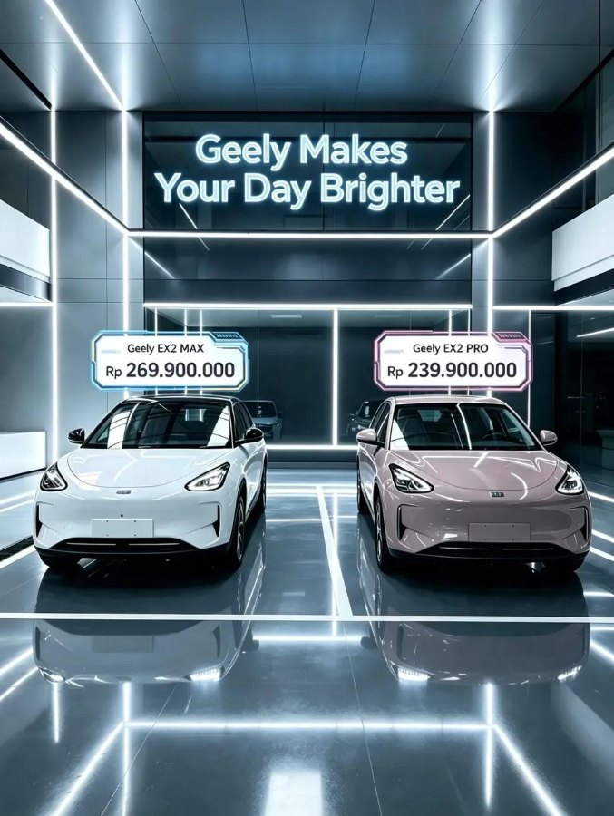

Geely EX2 Pro vs Max: Apa Bedanya dan Pilih yang Mana?

Geely EX2 hadir dalam dua varian, Pro dan Max. Keduanya memakai penggerak, baterai, dan jarak tempuh yang sama. Perbedaannya ada di fitur kenyamanan dan keselamatan. Artikel ini merangkum bedanya berdasarkan brosur resmi Geely Indonesia supaya kamu bisa memilih tanpa menebak.
Yang sama di Pro dan Max
- Motor 85 kW, torsi 150 Nm, penggerak roda belakang.
- Baterai LFP 40,8 kWh, jarak tempuh NEDC 395 km.
- Pengisian AC dan DC dengan spesifikasi yang sama, serta V2L.
- Layar infotainment 14,6 inci dan panel instrumen 8,8 inci.
- Lampu depan full LED, jok leatherette perforasi, dan ventilasi AC belakang.
- Airbag depan dan samping depan.
Tabel perbedaan
| Aspek | Pro | Max |
|---|---|---|
| Velg | Baja 15 inci | Alloy 16 inci |
| Ground clearance | 160,8 mm | 162 mm |
| Jok pengemudi | 6 arah manual | 6 arah elektrik |
| Lampu ambien 256 warna | Tidak ada | Ada |
| Airbag tirai samping | Tidak ada | Ada |
| Kamera | Kamera belakang | Kamera panorama 540 derajat |
| ADAS level 2 (12 fungsi) | Tidak ada | Ada |
| Kontrol kendaraan lewat aplikasi | Tidak ada | Ada |
| Jadwal pengisian jarak jauh | Tidak ada | Ada |
| Interior | Dark Grey | Dark Grey, opsi Ivory White |
Kapan Pro sudah cukup
Pilih Pro jika pemakaianmu sederhana: dalam kota, jarak dekat, dan kamu sudah nyaman dengan fitur dasar. Pro tetap membawa perlengkapan penting seperti layar besar, airbag depan dan samping, serta kamera belakang. Selisih harga yang dihemat bisa dialihkan untuk charger rumah atau asuransi.
Kapan Max lebih masuk akal
- Sering menyetir di jalan tol. ADAS level 2 membantu mengurangi kelelahan saat jalan panjang.
- Parkir sempit. Kamera panorama 540 derajat sangat membantu di kota padat.
- Keluarga dengan anak. Airbag tirai samping menambah perlindungan.
- Berbagi pengemudi. Jok elektrik memudahkan mengatur posisi.
- Suka teknologi. Kontrol lewat aplikasi dan jadwal pengisian jarak jauh memudahkan rutinitas, misalnya mengisi daya saat tarif atau beban listrik rumah lebih nyaman.
Fitur keselamatan dibahas lebih dalam di fitur keselamatan EX2.
Cara memutuskan dengan tenang
- Tulis tiga fitur yang benar-benar kamu pakai tiap hari.
- Cek apakah fitur itu hanya ada di Max.
- Bandingkan selisih harga dengan manfaatnya selama kamu memakai mobil ini.
- Coba kedua varian saat test drive jika memungkinkan.
Harga dan promo berubah dari waktu ke waktu, jadi tanyakan penawaran terbaru ke tim penjualan. Hal yang perlu ditanyakan dibahas di hal yang ditanyakan soal promo. Spesifikasi lengkap ada di spesifikasi lengkap Geely EX2.
Tips agar tidak menyesal
Banyak pembeli menyesal bukan karena memilih varian yang salah, melainkan karena tidak tahu fitur apa yang benar-benar mereka pakai. Tanyakan pada dirimu: apakah kamu akan memakai ADAS di jalan tol setiap pekan, atau hanya sesekali? Jika jawabannya sering, Max layak. Jika kamu hanya berkendara di dalam kota dengan kecepatan rendah, Pro sudah memberi pengalaman inti yang sama dengan baterai dan performa yang identik. Jangan lupa menghitung selisih harga dalam bentuk cicilan per bulan agar terasa nyata.
Ringkasan pilihan
| Prioritasmu | Varian yang disarankan |
|---|---|
| Anggaran paling efisien dengan fitur dasar yang cukup | Pro |
| Keselamatan dan bantuan pengemudi lebih lengkap | Max |
| Sering parkir di tempat sempit | Max (kamera 540 derajat) |
| Ingin interior Ivory White | Max |
Tanyakan ketersediaan
Ketersediaan unit, warna, dan waktu pengiriman bisa berbeda antarvarian. Hubungi kami lewat WhatsApp untuk simulasi sesuai kebutuhanmu, termasuk jadwal test drive kedua varian jika memungkinkan.
Tanya jawab
Apakah jarak tempuh EX2 Pro dan Max berbeda?
Tidak. Keduanya memakai baterai 40,8 kWh dengan jarak tempuh gabungan NEDC 395 km.
Varian mana yang punya ADAS?
ADAS level 2 dengan 12 fungsi hanya tersedia di varian Max.
Apakah EX2 Pro punya V2L?
Ya. Fitur V2L tersedia di Pro dan Max.